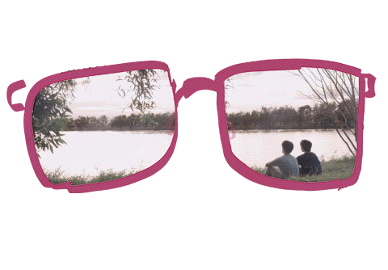

Love is universal because it taps into fundamental human needs that transcend culture, geography, and time. At its core, love; whether romantic, familial, or platonic, addresses our intrinsic desire for connection, belonging, and being seen and valued by another person. Biologically, we're wired for attachment. The neurochemicals released when we bond with others, oxytocin, dopamine, are the same whether you're in Tokyo, Nairobi, or New York. The racing heart, the longing, the joy of reunion, these physical responses are human universals.
Emotionally, every culture recognizes the vulnerability of opening your heart to someone, the ache of separation, the warmth of being understood. While cultures may express or prioritize different types of love (some emphasize romantic love, others familial devotion), the underlying emotions; tenderness, protectiveness, longing, grief at loss, are instantly recognizable across borders. Culturally, every society throughout history has grappled with love through stories, songs, poetry, and rituals. From ancient Sanskrit love poetry to modern K-pop ballads, from arranged marriages to dating apps, humans have always created frameworks to understand and pursue connection. The specifics differ, but the impulse is identical.
Linguistically, while languages have different words and nuances for love, all languages have ways to express it, proof that it's a concept every human community needs to articulate. Experientially, love is one of the few emotions that requires no translation. A parent cradling a child, partners holding hands, friends embracing after years apart, these images communicate instantly because we've all felt some version of that bond. Even those who've never experienced romantic love understand longing; even those without children grasp protective devotion.
Love is universal because it speaks to our shared vulnerability and our shared need for meaning beyond ourselves. It reminds us that despite our differences, we all fear loneliness, crave connection, and find our greatest joys and deepest pains in our relationships with others.